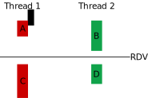

19 - Semáforos II e Modelos de concorrência
Na aula anterior, trabalhamos com semáforos de um ponto de vista principalmente conceitual.
Aproveitaremos a aula de hoje para fixar nosso conhecimento sobre semáforos, verificando como implementar semáforos POSIX. Além disso, iremos explorar o modelo produtor consumidor.
Correção Rendez-vous POSIX
Implemente (do zero) um programa que cria duas threads e as sincroniza usando RDV. Ambas deverão fazer um print antes e um depois do ponto de encontro. Use o seguinte esquema como guia.

As partes A e B podem ser feitas em qualquer ordem, mas ambas obrigatoriamente devem ocorrer antes de iniciar a execução de C e D. Note que C e D também podem ser feitas em qualquer ordem.
Exercise 1
Resposta
Não! Qualquer um deles que for inicializado com 1 fará com que a thread que espera por ele passe direto na barreira, um resultado indesejado. Recomendo que teste e rode várias vezes!
Exercise 2
Resposta
Se alterar em apenas uma thread, até irá funcionar. Supondo a alteração na thread1, o resultado prático é que teríamos uma ordem fixa, a thread1 sempre esperaria o aviso de que a thread2 chegou na barreira antes de avisar que ela mesmo chegou.
Entretanto, se ambas as threads fossem alteradas para ter o sem_wait antes do sem_post então a thread1 esperaria pelo aviso da thread2, mas a thread2 também esperaria pelo aviso da thread1. Então ambas as threads ficariam travadas, em estado de deadlock.
Aplicação de Semáforos
Já vimos o uso de semáforos para sincronizar threads, de forma que as threads esperem pelas outras em um ponto de encontro. Agora, vamos utilizar semáforos para controlar a quantidade de threads que podem acessar ao mesmo tempo um recurso computacional.
Example
Implemente (do zero) um programa que cria N threads, entretanto, apenas MAX threads podem executar ao mesmo tempo.
Sua thread pode fazer um procedimento qualquer, por exemplo, um loop infinito que simula um processamento de dados!
Tip 1
Tente pensar no que acontece com sem_wait e sem_post quando o semáforo é inicializado com valor maior que zero.
Modelos de concorrência
Vamos implementar o modelo produtor consumidor, levando em consideração que:
- As threads produtoras e consumidoras compartilham um cache único. Pode ser um array de inteiros.
- Ambas as threads rodam em loop infinito simulando um stream de dados. A cada iteração, as threads sorteiam um valor aleatório de segundos (por ex, entre
0e5) e então tentam pruduzir / consumir os dados.
Faça!
Implemente (do zero) um programa que cria uma thread produtora e uma thread consumidora.
Você pode supor que a thread produtora adiciona números na fila de tarefas, enquanto a thread consumidora espera por um segundo ou dois (para simular processamento) e então exibe o número consumido na saída padrão.

Exercise 3
Resposta
Procure por fila circular, buffer circular!
Exercise 4
Resposta
Podemos utilizar um semáforo inicializado com o tamanho no buffer. Cada produção realiza um wait neste semáforo. Quando o semáforo zera então o cache está cheio e a thread produtora deve esperar. Tente pensar se o consumo deve ou não atualizar este semáforo!
Exercise 5
Resposta
Podemos utilizar um semáforo inicializado com zero. Quando a thread produtora produz algo, este semáforo recebe um post. Tente pensar se o consumo deve ou não atualizar este semáforo!
Example
Implemente uma versão com M threads produtoras e N threads consumidoras.